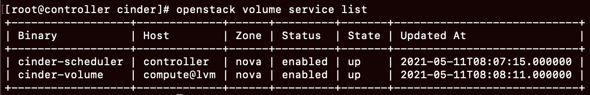
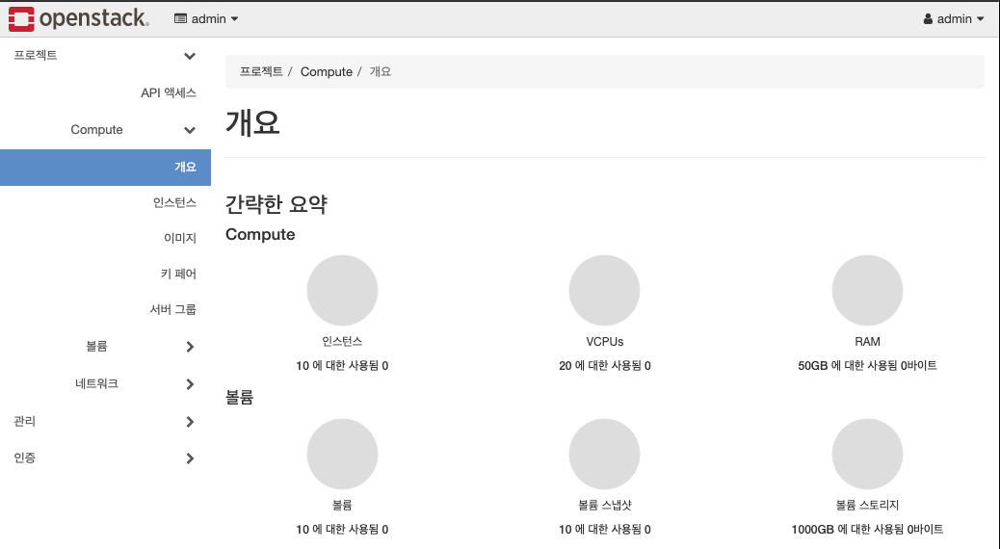

(1) DB 설정
[1] controller
mysql -u root -p
CREATE DATABASE cinder;
GRANT ALL PRIVILEGES ON cinder.* TO 'cinder'@'localhost' IDENTIFIED BY 'qwer1234';
GRANT ALL PRIVILEGES ON cinder.* TO 'cinder'@'%' IDENTIFIED BY 'qwer1234';
(2) 키스톤에 블록 스토리지 서비스 추가
(3) 서비스 설치
(4) 서비스 설정
(5) 컴퓨트 노드에 LVM 설정
[2] compute
(6) 컴퓨트 노드에 cinder 설치 compute
(6) 컴퓨트 노드에 cinder 설치
compute
(7) 컴퓨트 노드에 cinder 설정
(8) 컨트롤러 노드에서 확인
결과 2개 나오고 up 떠야함.

** compute에서 up 안될 때 && cinder Volume driver LVMVolumeDriver not initialized 에러 :
컴퓨트 노드에서 /etc/cinder/cinder.conf 파일
[lvm] 부분 마지막에 lvm_type = auto 추가 후, systemctl start openstack-cinder-volume.service
이 부분 오픈스택 메뉴얼 페이지에 나와있지 않아서 에러날 수 있음.
** 컨트롤러랑 컴퓨터 노드의 date 쳤을 때 시간 값이 안맞으면 동기화 안됨.
** 재부팅 후 rabbitmq 수동으로 재시작하기
오픈스택 대시보드 접속
